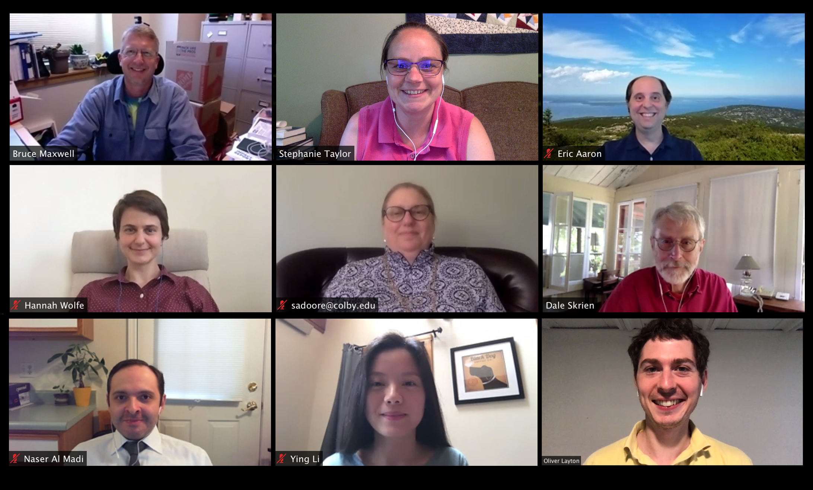

Current Courses
TA Hours: All TA sessions will be in person in Fall 2022. We have evening TAs from Sunday to
Wednesday weekly from the second week, September 12, of this fall except during breaks. Please find the
TA schedule here.
January 2023
Fall 2022
Spring 2023
- CS 151: Computational Thinking: Visual Media (Doore, Al Madi)
- CS 152: Computational Thinking: Science (Harper)
- CS 231: Data Structures and Algorithms (Harper, Aaron)
- CS 251: Data Analysis and Visualization (Taylor, Stent)
- CS 252: Mathematical Data Analysis and Visualization (prerequisite: Linear Algebra)(Layton, Taylor)
- CS 310: Creating Future Worlds: Computing, Ethics, and Society (Doore)
- CS 333: Programming Languages (Li)
- CS 343: Neural Networks (Stent)
- CS 376: Algorithm Analysis and Design (Aaron)
- CS 421: Empirical Software Engineering (Al Madi)
- CS 441: Systems Biology II (Taylor)
- CS 443: Bio-Inspired Machine Learning (Layton)
Computer Science at Colby
Colby CS is searching for a Visiting Assistant Professor to teach for one year
beginning Fall 2023
See the VAP position
description for more information. Review of applications begins January 30, 2023. Please
note that applications should be submitted via Interfolio.

Computer Science studies the design of computational processes,
computing systems, and virtual objects. We're trying to answer the
question, 'What can computers do?', which encompasses theory,
application, and hardware.
Due to its broad applicability, Computer Science impacts and
interacts with a wide variety of disciplines. Many recent advances in
both the natural and social sciences would not have been possible
without the exponential growth in computing power and the
corresponding design of advanced algorithms brought about by the work
of computer scientists.
The Colby Computer Science Department is committed to integrating
computer science and the liberal arts. Our goal is to provide Colby
students with a strong background in CS, while also teaching them how
to integrate their knowledge with other disciplines in order to
produce new and innovative discoveries. Whether you want to be a
major, minor, or just take a few courses, whatever your interests,
knowing more about computers and computation will give you the ability
to expand your possibilities.
If you are interested in computer science, drop by and talk
with the CS faculty or students on first floor of the Davis
Science Building.
CS Department in the News
CS students form an officially recognized chapter to build 3D printed prosthetics. Contact e-NABLE at
Colby club president (Brunda Katikireddy ‘24) for details on getting involved!
Congratulations to our student Tamsin Rogers ’23 on winning best talk award at CUSRR 2021 for her
research work on reducing the time and cost of software debugging.
Regan Bragg and the Jr High Coding Club featured in the Morning
Sentinel and the Colby
Magazine.
Check out the Promotional Video for the JR High Coding Club